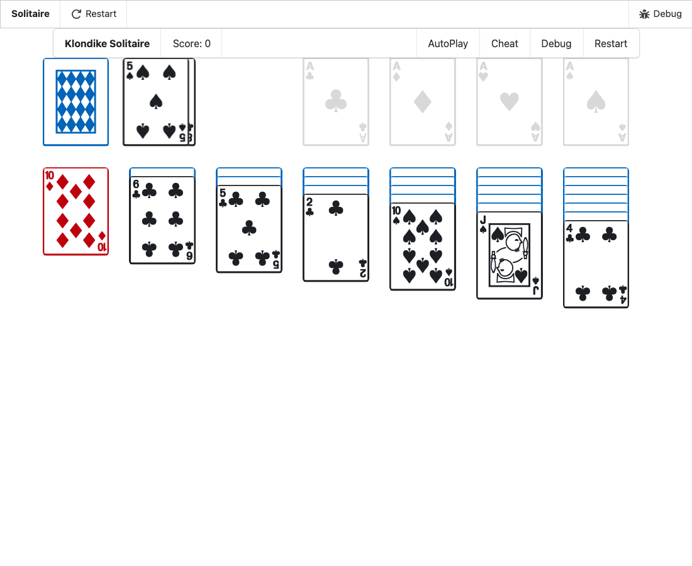

-
In VS Code's main window (the kit's,
spell), open the Explorer (⇧⌘E) and open any file in
spell-app/spaces/@spell/examples/Solitaire/.
-
Open the Command Palette (⇧⌘P) and run:
Spell: Run Project
- Wait for the game to show in the Spell panel.
- Click the stock (top left) a few times.
- Play a card: click a face-up card that can go on a foundation or a tableau.
- Each card slides from where it was to where it lands.
- No card jumps.
